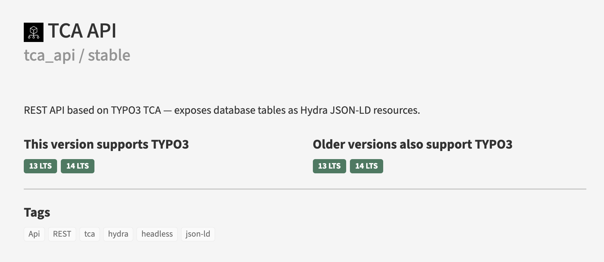
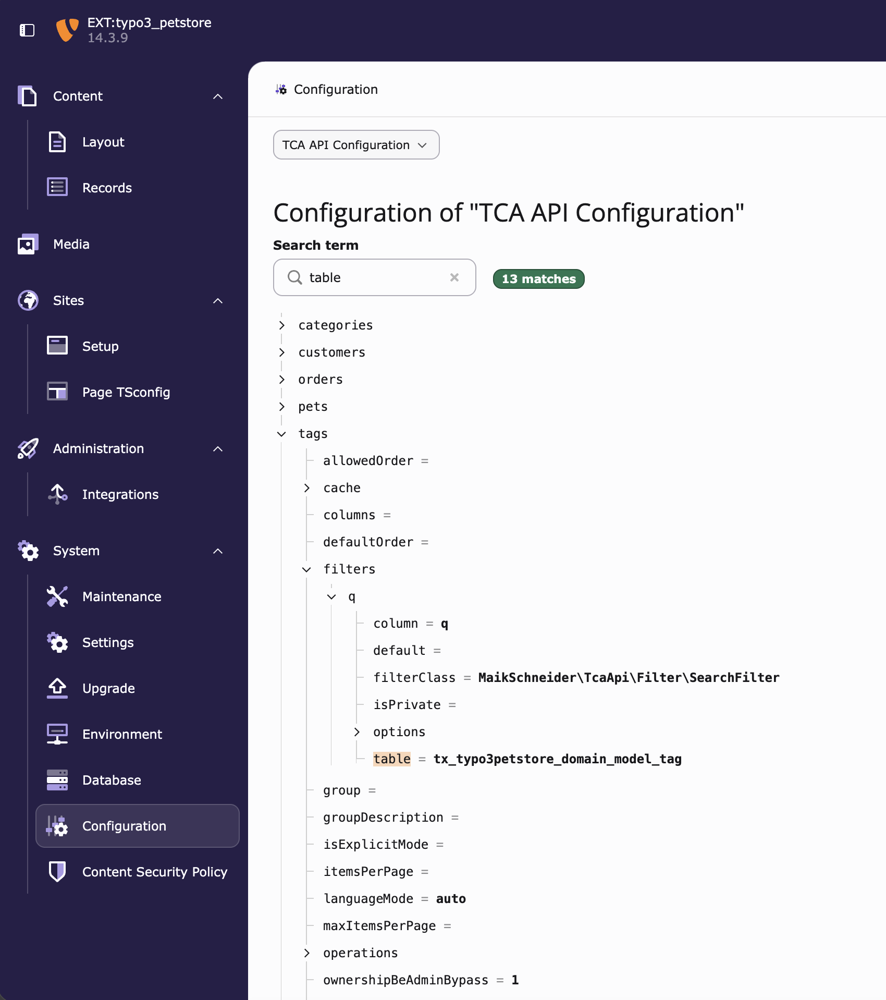
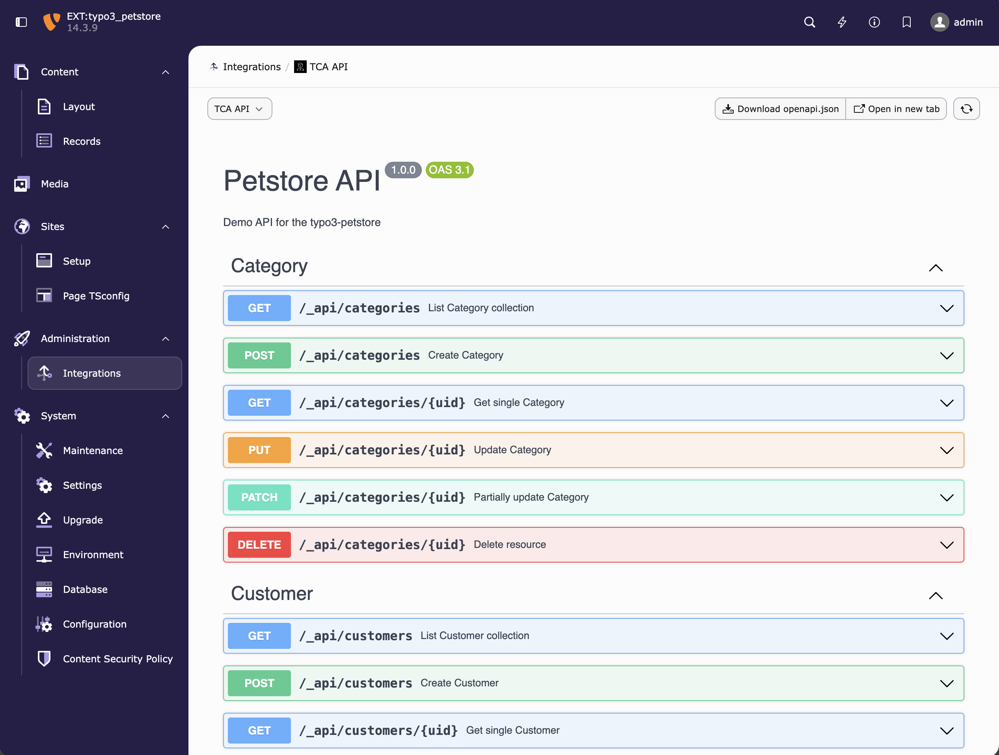

TYPO3 Camp Berlin 2026
TCA rein,
JSON-LD raus.
Einfach konfiguriert, schnell ausgeliefert:
eine REST-API für jede TCA-Tabelle mit tca_api
Maik Schneider
Technical Lead TYPO3 · xima
github.com/maikschneider/tca-api
1
Hallo, ich bin Maik, Technical Lead TYPO3 bei xima in Dresden. Es geht um tca_api, eine Extension, die ich in meiner Freizeit pflege. Sie macht aus jeder TCA-Tabelle eine REST-API. Der Titel beschreibt die Idee: Unsere Daten beschreiben wir ohnehin schon im TCA, und genau daraus soll die API entstehen, ohne Models, Controller oder Mapping. Und sie soll dabei schnell bleiben, auch bei kaltem Cache. Einfach konfigurieren und schnell ausliefern, beides gleich wichtig.
GET /_api/articles
Hydra JSON-LD, ein offener Standard
1
@context
Welches Vokabular gilt
2
@id und @type
Adresse und Typ jeder Ressource
3
totalItems und view
Pagination nach Standard
4
Verlinkt
Nur die @id, der Client löst sie auf
5
Eingebettet
Ganzer Datensatz, kein zweiter Request
{
"@context": "http://www.w3.org/ns/hydra/context.jsonld", ← 1
"@type": "hydra:Collection",
"hydra:totalItems": 10000, ← 3
"hydra:member": [{
"@id": "/_api/articles/4", ← 2
"@type": "Article",
"title": "Caching in TYPO3",
"reading_time": 12,
"author": "/_api/authors/7", ← 4
"tags": [{"@id": "/_api/tags/1", "@type": "Tag", ← 5
"title": "PHP"}, …]
}, … 19 weitere],
"hydra:view": { ← 3
"@type": "hydra:PartialCollectionView",
"hydra:first": "/_api/articles?page=1",
"hydra:next": "/_api/articles?page=2",
"hydra:last": "/_api/articles?page=500"
}
}
2
Bevor ich erzähle, warum es diese Extension gibt: So sieht das Ergebnis aus. Ein ganz normaler Listen-Request, und heraus kommt Hydra JSON-LD. Das ist kein eigenes Format, sondern ein offener W3C-Standard, den zum Beispiel auch API Platform spricht. Eins: @context sagt jedem Client, welches Vokabular gilt. Zwei: Jede Ressource hat eine @id, also ihre eigene Adresse, und einen @type. Drei: Gesamtzahl und Pagination-Links kommen standardisiert mit, hydra:totalItems und hydra:view, man muss sich nichts selbst ausdenken. Für Relationen gibt es zwei Wege, beide im selben Beispiel. Vier: verlinkt. Der Autor ist nur seine @id, ein Hydra-Client kann sie bei Bedarf auflösen. Fünf: eingebettet. Die Tags stehen als ganze Datensätze drin, wieder mit eigener @id und eigenem Typ, ohne zweiten Request. Ein Frontend, das einmal Hydra versteht, versteht jede Ressource. Wie das im Vergleich abschneidet, zeigt die nächste Folie.
06 · Beispiel Personenverzeichnis
Der Cache ist ständig kalt
Backend: neue Person, Austritt
Frontend-Update: Profil gepflegt
07:00
10:00
13:00
16:00
19:00
Jeder Strich leert den Cache. Der nächste Request ist kalt.
Der Engpass bei t3api:
die Serialisierung
5
Das Problem im Alltag: Der Cache bleibt nie lange warm. Neue Personen im Backend, Profilpflege im Frontend, Deployments, und jedes Mal ist der nächste Request kalt. Bei tausenden Datensätzen mit vielen Relationen war genau dieser kalte Request bei t3api zu langsam, und die meiste Zeit ging in die Serialisierung. Also habe ich eine Extension gebaut, die genauso einfach zu konfigurieren ist, aber hier nicht einbricht.
Die Extension
tca_api: frei verfügbar, in drei Schritten startklar

GitHub
github.com/maikschneider/tca-api
TER
extensions.typo3.org/extension/tca_api
Doku
docs.typo3.org/p/maikschneider/tca-api
Version 2.2.0 · TYPO3 13.4 und 14.3 · PHP 8.2+ · GPL-2.0-or-later
composer require \
maikschneider/tca-api
dependencies:
- maikschneider/tca-api
Configuration/TcaApi/Articles.php
→ GET /_api/articles
6
Kurz zur Extension selbst. tca_api ist frei verfügbar: auf GitHub, im TER und mit Doku auf docs.typo3.org, aktuell Version 2.2.0 für TYPO3 13 und 14, unter GPL. Ein Freizeitprojekt von mir. Loslegen sind drei Schritte: per Composer installieren, das Site Set in die Site-Konfiguration aufnehmen, dann antwortet die API unter /_api. Und als dritter Schritt eine Datei pro Ressource unter Configuration/TcaApi. Wie diese Datei aussieht, zeigt die nächste Folie. Der Rest des Vortrags folgt dem Ziel von vorhin: erst wie einfach die Konfiguration ist, danach warum es auch bei kaltem Cache schnell bleibt.
Schritt 3 · Ressource anlegen
Das ist eine komplette Ressource
// Configuration/TcaApi/Articles.php
return [
'general' => [
'table' => 'tx_bench_article',
'resourceName' => 'articles',
'resourceType' => 'Article',
],
];
Man bekommt: Liste, Detail, Pagination, Hydra JSON-LD, OpenAPI und Swagger UI.
Man spart sich: Controller, Extbase-Models, Routen, generierte Klassen.
Felder und Typen kommen aus dem TCA. Nichts läuft auseinander.
7
Das ist Schritt 3 von eben, ausgeschrieben: eine Datei, drei Zeilen. Tabelle, Name in der URL, Typ im JSON-LD. Daraus entstehen Liste, Detail, Pagination und die OpenAPI-Doku. Welche Felder es gibt und welchen Typ sie haben, steht schon im TCA, deshalb muss ich es hier nicht wiederholen.
Und im Backend?
Konfiguration und Doku, ohne eine Zeile Code mehr

1
System › Configuration
Die fertige Konfiguration aller Ressourcen als durchsuchbarer Baum

2
Administration › Integrations
Swagger UI mit OpenAPI 3.1, zum Ausprobieren oder als openapi.json
8
Was man aus den paar Zeilen Konfiguration bekommt, sieht man auch im Backend, hier am Beispiel der Petstore-Demo. Links das Configuration-Modul unter System: Die komplette TCA-API-Konfiguration aller Ressourcen als Baum, inklusive aller Werte, die aus dem TCA und den Defaults kommen. Die Suche hilft, wenn man wissen will, wo zum Beispiel welche Tabelle hängt. Rechts unter Integrations die Swagger UI: Für jede Ressource werden die Endpunkte aus derselben Konfiguration als OpenAPI 3.1 erzeugt, mit GET, POST, PUT, PATCH und DELETE, je nachdem, welche Operationen freigeschaltet sind. Man kann direkt ausprobieren oder die openapi.json herunterladen, etwa um einen typisierten Client fürs Frontend zu generieren. Doku und API laufen damit nie auseinander.
Highlights
Die häufigsten Fälle, jeweils ein paar Zeilen Konfiguration
01
Relationen einbetten
Autor und Tags im selben Request
02
Filtern und Suchen
auch über Relationen hinweg
03
Responsive Bilder
alle Crop Variants, fertig verarbeitet
04
Links und Detail-URLs
ohne TypoScript
05
Formulare und Uploads
Schreiben mit Datei in einem Request
Ohne Konfiguration dabei: Mehrsprachigkeit, Pagination, OpenAPI und Swagger UI.
9
Statt Theorie jetzt die Fälle, die in fast jedem Projekt vorkommen. Fünf Stück, und jeder kostet nur ein paar Zeilen Konfiguration. In anderen API-Extensions ist jeder davon ein eigenes Stück Code. Mehrsprachigkeit über die Sprach-URL, Pagination und die OpenAPI-Doku bekommt man sogar ganz ohne Konfiguration.
Anwendungsfall 1 · Relationen
Artikel mit Autor und Tags in einem Request
Konfiguration · Articles.php
'columns' => [
'author' => ['embed' => true],
'tags' => ['embed' => true],
],
Ergebnis
GET /_api/articles
{
"title": "Caching in TYPO3",
"author": {
"@id": "/_api/authors/7",
"name": "Ada Lovelace"
},
"tags": [{"title": "PHP"}, {"title": "Cache"}]
}
Eine Query pro Relation, egal ob 20 oder 1.000 Datensätze.
Anderswo: Model pro Tabelle, Mapping, Serializer-Gruppen und oft eine Query pro Datensatz.
10
Der häufigste Fall überhaupt: Eine Liste, und jeder Eintrag braucht seinen Autor und seine Tags. Ohne embed kommt nur die @id, wie auf Folie 2 gezeigt. Mit 'embed' => true steht der ganze Datensatz drin. Unter der Haube ist das eine Query pro Relation für die ganze Seite, nicht eine pro Zeile. Wer tiefer will, setzt 'embed' => ['depth' => 2].
Anwendungsfall 2 · Filter und Suche
Filtern und Suchen, auch über Relationen
Konfiguration · Articles.php
'filters' => [
'categories.title' => ExactFilter::class,
'q' => [SearchFilter::class, [
'columns' => ['title', 'author.name'],
]],
],
Ergebnis
GET /_api/articles
?filters[categories.title]=Technik
&filters[q]=hopper
→ nur Artikel aus „Technik“,
deren Titel oder Autor „hopper“ enthält
Ein Punkt im Namen genügt, um über Relationen zu filtern.
Anderswo: pro Filter eine eigene Repository-Methode mit Joins.
11
Zweiter Klassiker: Facetten und eine Suchbox. categories.title heißt: folge der Relation categories und vergleiche dort den Titel. Die Joins baut tca_api aus dem TCA. Der Suchfilter durchsucht mehrere Spalten auf einmal, auch verknüpfte wie author.name. Mehrfachauswahl braucht keinen Extra-Code, man schickt einfach filters[x][] mehrfach.
Anwendungsfall 3 · Bilder
Responsive Bilder mit allen Crop Variants
Konfiguration · Articles.php
'columns' => [
'image' => ['image' => [
'maxWidth' => 1200,
'fileExtension' => 'webp',
]],
],
Ergebnis
"image": {
"publicUrl": "/fileadmin/hero.jpg",
"metadata": {"alternative": "…"},
"cropVariants": {
"desktop": {"publicUrl": "…/hero_d.webp"},
"mobile": {"publicUrl": "…/hero_m.webp"}
}
}
Die Crops aus dem Backend kommen fertig verarbeitet an.
Anderswo: pro Variante ein Getter mit eigener Bildverarbeitung.
12
Redakteure pflegen Crop Variants im Backend, und das Frontend braucht sie für picture und srcset. tca_api verarbeitet jede Variante mit den angegebenen Grenzen, hier maximal 1200 Pixel als WebP, und liefert sie als Map. Mit 'cropVariant' => 'mobile' kommt genau eine Variante, flach ausgegeben. Alt-Text und Copyright aus den Metadaten sind gleich dabei.
Anwendungsfall 4 · Links
Links und Detail-URLs ohne TypoScript
Konfiguration · News.php
// Link-Felder: nichts zu tun
'virtualProperties' => [
'url' => [
'processor' => RouteEnhancerProcessor::class,
'route' => [
'pid' => 12, 'extension' => 'News', …
'arguments' => ['news' => '{uid}'],
],
],
],
Ergebnis
GET /_api/news/4
{
"title": "Caching in TYPO3",
"link": "https://typo3.org",
"url": "/news/caching-in-typo3"
}
Jedes Link-Feld wird automatisch aufgelöst, Detail-URLs laufen über den Site-Router.
Anderswo: TypoScript-Setup plus eigener Link-Builder pro Datensatz.
13
Zwei Arten von Links. Felder vom TCA-Typ link löst tca_api automatisch zu echten URLs auf, ohne eine Zeile Konfiguration. Und die Detail-URL eines Datensatzes, etwa einer News, entsteht als virtuelle Property über den normalen Site-Router. Damit greifen die Route Enhancer der Seite, und die URL ist dieselbe wie im Frontend.
Anwendungsfall 5 · Formulare
Datensatz anlegen, mit Datei, in einem Request
Konfiguration · Articles.php
'general' => [
…
'operations' => ['list', 'show', 'create'],
'storagePid' => 2,
],
'security' => ['create' => AccessRole::FE_USER],
'columns' => [
'image' => ['upload' => [
'folder' => '1:/user_upload/',
]],
],
Ergebnis
curl -X POST /_api/articles \
-F "title=Neuer Artikel" \
-F "image=@foto.jpg"
→ 201 Created
→ 422 mit Feldfehlern, Regeln aus dem TCA
Gespeichert wird über den DataHandler: Hooks, Historie und Cache-Leerung inklusive.
Anderswo: Controller, Validatoren, Datei-Handling und oft ein zweiter Request für den Upload.
14
Lesen ist die halbe Miete, irgendwann will ein Formular schreiben. Operation freischalten, Speicherort und Rolle festlegen, fertig. Pflichtfelder, Längen und erlaubte Dateitypen kommen aus dem TCA, Fehler kommen als 422 mit Feldnamen zurück. Die Datei geht im selben multipart-POST mit, und gespeichert wird über den DataHandler als eingeloggter User, also mit Hooks, sys_history und Cache-Invalidierung.
Performance
Zwei Zustände, die zählen
Warmer Cache
Die Antwort liegt fertig bereit. Hier ist fast jede API schnell.
Der Normalfall zwischen zwei Änderungen
Kalter Cache
Der erste Request nach jeder Änderung. Jetzt zählen Queries und Serialisierung.
Im Personenverzeichnis: ständig
So wurde gemessen
6 APIs, dieselbe Aufgabe, jede im eigenen Paket mit eigenem Cache · TYPO3 14.3.8, Production-Modus · k6 mit 8 virtuellen Usern · Median aus 3 Läufen · Code und Rohdaten öffentlich
16
Zur Performance. Bevor Zahlen kommen: Es gibt zwei Zustände, und die muss man auseinanderhalten. Mit warmem Cache liegt die Antwort fertig bereit, da ist fast jede API schnell, auch die selbst gebaute. Spannend wird der kalte Cache: der erste Request nach jeder Änderung. Dann muss die API wirklich arbeiten, und es zählt, wie viele Queries sie absetzt und wie teuer die Serialisierung ist. Gemessen habe ich sechs APIs mit derselben Aufgabe, jede in ihrem eigenen Paket, so eingerichtet wie ihre Doku es beschreibt, mit ihrem eigenen Cache. Ich habe tca_api geschrieben, deshalb sind Code und Rohdaten öffentlich.
Warmer Cache · 100 Datensätze
Mit warmem Cache sind alle schnell
Record API, von Hand
14 ms
Warm entscheidet der Cache, nicht die API. Die Record API mit eigenem Antwort-Cache ist hier vorn.
Antwortzeit p50 · TYPO3 14.3.8, Production-Modus · k6, 8 virtuelle User · Median aus 3 Läufen · ¹ ohne Kategorien
17
Erst der warme Fall, 100 Artikel mit Relationen, zweiter Durchlauf derselben URLs. Alle liegen zwischen 14 und 90 Millisekunden, und tca_api ist hier nicht vorn. Am schnellsten ist die von Hand gebaute Record-API-Variante: Sie prüft in einer Middleware ihren eigenen Cache und antwortet, bevor viel von TYPO3 läuft. Das ist ein gutes Muster. Die Unterschiede im warmen Fall sind klein und schwanken auf dem Laptop. Für den Nutzer ist das alles schnell.
Kalter Cache · 100 Datensätze
Kalt trennt sich das Feld
Record API, von Hand
216 ms
Ohne Cache zählt, wie viele Queries eine API absetzt: tca_api 5, die anderen 216 bis 307.
Antwortzeit p50 · TYPO3 14.3.8, Production-Modus · k6, 8 virtuelle User · Median aus 3 Läufen · ¹ ohne Kategorien, eine Relation weniger
18
Jetzt derselbe Request direkt nach dem Leeren aller Caches. tca_api braucht 57 Millisekunden, die anderen zwischen 107 und 716. Der Grund steht unten: Die meisten APIs laden Relationen pro Datensatz nach, das sind bei 100 Artikeln gut 300 Queries. Die von Hand gebaute Record API liegt im Mittelfeld, wer sie selbst schreibt und die Relationen gezielt vorlädt, kommt weiter nach vorn. tca_api macht das Vorladen automatisch, für jede Ressource. Warum das so ist, zeigt die nächste Folie.
Und warum ist das schnell?
Drei Entscheidungen gegen den üblichen TYPO3-Weg
01
Konfiguration statt Code
Ein PHP-Array pro Ressource. Keine Controller, Models oder generierten Klassen.
my_ext/
└── Configuration/
└── TcaApi/
├── Articles.php ← Ressource
├── People.php
└── Overrides/
└── Extend.php ← erweitern
Erweitern wie im TCA: Overrides/
02
Arrays statt Objekte
Von der Datenbankzeile direkt zu JSON-LD.
TCA
Spalten, Typen, Relationen
↓
QueryBuilder-Zeilen
einfache Arrays
↓
Nach TCA-Typ normalisiert
Datum, Bilder, Links, Relationen
↓
Hydra JSON-LD
kompatibel mit API Platform
Kein DataMapper, keine Hydration, keine Proxies
03
Preloading statt Lazy Loading
Eine Query pro Relation, nie eine pro Zeile.
Cache-Lookup
Treffer: 0 Queries
↓
Basis-Query
Filter, Sortierung, Seite, Count
↓
EmbedPreloader
ein WHERE uid IN (…) pro Relation
↓
JSON-LD
mit Cache-Tags gespeichert
Invalidierung über den DataHandler
19
Einfach war die eine Hälfte des Versprechens, jetzt die andere: schnell, auch bei kaltem Cache wie im Personenverzeichnis. Dahinter stecken drei Entscheidungen. Erstens Konfiguration statt Code, das haben wir gerade gesehen. Zweitens Arrays statt Objekte: Die Datenbankzeile wird direkt nach TCA-Typ normalisiert und als JSON-LD ausgegeben, ohne DataMapper und Hydration. Drittens Preloading: pro Relation eine Query für die ganze Seite, nie eine pro Zeile, und das Ergebnis landet mit Cache-Tags im Cache, die der DataHandler gezielt leert. Was das in Zahlen bedeutet, zeigen die nächsten Folien.
Kalter Cache · 1.000 Datensätze
Bei großen Datenmengen: Faktor 10 und mehr
Record API, von Hand
1.524 ms
Extbase, von Hand
1.782 ms
Genau der Fall aus dem Personenverzeichnis: alle Daten auf einmal zum Client.
Antwortzeit p50 · TYPO3 14.3.8, Production-Modus · k6, 8 virtuelle User · Median aus 3 Läufen · sg_apicore fehlt: höchstens 100 Datensätze pro Seite
21
Und das Extrem, 1.000 Artikel in einem Request, kalt. Das ist der Suchindex-Feed oder eben das Personenverzeichnis, das alle Daten zum Client schiebt. tca_api braucht 140 Millisekunden, die schnellste Alternative anderthalb Sekunden, t3api sechs. Genau hier ist damals das Telefonbuch an seine Grenze gekommen. sg_apicore fehlt, weil es höchstens 100 Datensätze pro Seite ausliefert.